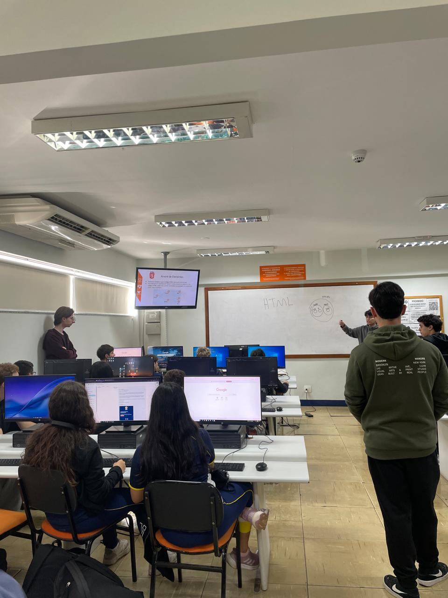

Relatório – 13ª Aula
Data: 01/06/2026
Turma: 8º e 9º ano
Instrutor:Kawan
Relatório – html básico
Na aula de hoje os alunos começaram a entender como funciona a criação de sites. O instrutor Kawan explicou toda a parte básica do html, mostrando o que são tags, atributos, divisão de classes e como adicionar elementos como fotos, links e listas. Durante a explicação, deu para notar que eles estavam assimilando bem o conteúdo novo.
No geral, a aula foi muito boa e produtiva, já que é um tema bem prático. Foi bem legal acompanhar o começo deles nessa parte de desenvolvimento e ver como reagiram aos primeiros comandos, deixando a base pronta para as próximas atividades. No final tiveram que fazer uma atividade que consistia em criar um site sobre um tópico livre mas que tenha título, parágrafo, foto e uma lista.
